Scanning and Enumeration
الفحص والتعداد
Eng. Zahra Rajeh, M.Sc. · 68 slides, fully translated, nothing omitted.
م. زهراء راجح · ٦٨ شريحة مترجمة بالكامل دون حذف أي شيء.
SCANNING AND ENUMERATION
Ethical Hacking and Penetration
Eng. Zahra Rajeh, M.Sc.
OUTLINE
- TCP/IP Networking
- Port Numbering
- Identifying Live Hosts
- Port Scanning
- Scanning tools
- Evasion
- Vulnerability Scanning
- Enumeration
الفحص والتعداد
الاختراق الأخلاقي واختبار الاختراق
م. زهراء راجح، ماجستير
المحتويات
- شبكات TCP/IP
- ترقيم المنافذ
- تحديد الأجهزة النشطة
- فحص المنافذ
- أدوات الفحص
- التهرب من الكشف
- فحص الثغرات
- التعداد
Scanning is the process of discovering systems on the network and taking a look at what open ports and applications may be running.
With footprinting, we wanted to know how big the network was and some general information. In scanning, we’ll go into the network and start touching each device to find out more about it.
الفحص (Scanning) هو عملية اكتشاف الأنظمة الموجودة على الشبكة والاطلاع على المنافذ المفتوحة والتطبيقات التي قد تعمل عليها.
في البصمة كنا نريد معرفة حجم الشبكة وبعض المعلومات العامة. أما في الفحص فسندخل إلى داخل الشبكة ونبدأ بلمس كل جهاز لمعرفة المزيد عنه.

Connectionless (UDP) — slide 6بلا اتصال (UDP)
- No connection is established before data transmission.
- Data is sent immediately (fire-and-forget).
- Fast and low overhead.
- Does not guarantee delivery, ordering, or error recovery.
- Suitable for applications where speed is more important than reliability (e.g., DNS, DHCP, VoIP).
- لا يُنشأ اتصال قبل إرسال البيانات.
- تُرسَل البيانات فوراً (أرسل وانسَ).
- سريع وبأعباء منخفضة.
- لا يضمن التسليم ولا الترتيب ولا معالجة الأخطاء.
- مناسب للتطبيقات التي تكون فيها السرعة أهم من الموثوقية (مثل DNS و DHCP و VoIP).
Connection-oriented (TCP) — slide 7موجّه بالاتصال (TCP)
- Establishes a connection before transmitting data.
- Uses the Three-Way Handshake to initiate communication.
- Provides reliable, ordered, and error-checked data delivery.
- Supports acknowledgments, retransmissions, and flow control.
- Suitable for applications requiring reliable communication (e.g., HTTP, HTTPS, FTP, SSH).
- يُنشئ اتصالاً قبل إرسال البيانات.
- يستخدم المصافحة الثلاثية لبدء الاتصال.
- يوفر تسليماً موثوقاً ومرتباً ومُتحقَّقاً من أخطائه.
- يدعم الإقرارات وإعادة الإرسال والتحكم في التدفق.
- مناسب للتطبيقات التي تتطلب اتصالاً موثوقاً (مثل HTTP و HTTPS و FTP و SSH).
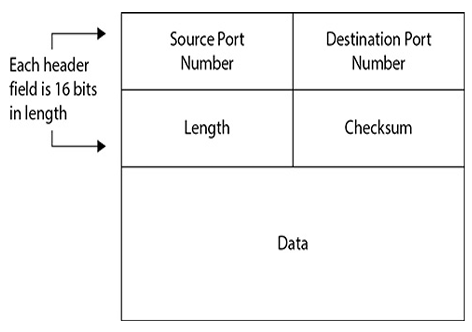
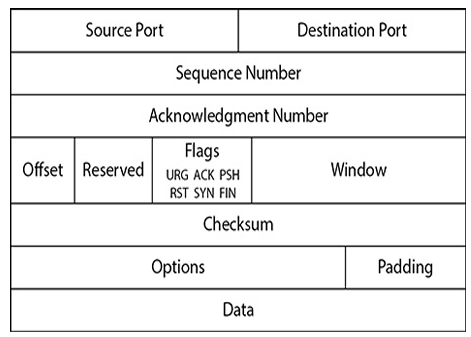
- The TCP header contains six flags that control the transmission of data across a TCP connection.
- Four of these flags (SYN, ACK, FIN, and RST) govern the establishment, maintenance, and termination of a connection.
- The other two flags (PSH and URG) provide instructions to the system.
- The size of each flag is 1 bit.
- When a flag value is set to 1, that flag is turned on.
- تحتوي ترويسة TCP على ستة أعلام تتحكم في نقل البيانات عبر اتصال TCP.
- أربعة من هذه الأعلام (SYN و ACK و FIN و RST) تحكم إنشاء الاتصال وصيانته وإنهاءه.
- العلَمان الآخران (PSH و URG) يوفران تعليمات للنظام.
- حجم كل عَلَم هو بت واحد.
- عندما تُضبط قيمة العَلَم على ١ يكون العَلَم مُفعّلاً.
| Flag | Meaning (English) | المعنى (العربية) |
|---|---|---|
| SYN (Synchronize) | This flag is set during initial communication establishment. It indicates negotiation of parameters and sequence numbers. | يُضبط هذا العَلَم أثناء إنشاء الاتصال الأولي، ويشير إلى التفاوض على المعاملات وأرقام التسلسل. |
| ACK (Acknowledgment) | This flag is set as an acknowledgment to SYN flags. This flag is set on all segments after the initial SYN flag. | يُضبط كإقرار لأعلام SYN، ويكون مضبوطاً على جميع المقاطع بعد SYN الأولي. |
| RST (Reset) | This flag forces a termination of communications (in both directions). | يفرض هذا العَلَم إنهاء الاتصالات (في كلا الاتجاهين). |
| FIN (Finish) | This flag signifies an ordered close to communications. | يشير هذا العَلَم إلى إغلاق منظّم للاتصالات. |
| PSH (Push) | This flag forces the delivery of data without concern for any buffering. In other words, the receiving device need not wait for the buffer to fill up before processing the data. | يفرض تسليم البيانات دون الاهتمام بأي تخزين مؤقت؛ أي أن الجهاز المستقبِل لا يحتاج لانتظار امتلاء المخزن المؤقت قبل معالجة البيانات. |
| URG (Urgent) | When this flag is set, it indicates the data inside is being sent out of band. Cancelling a message mid-stream is one example. | عند ضبطه يشير إلى أن البيانات داخله تُرسَل خارج النطاق (out of band). ومن الأمثلة إلغاء رسالة في منتصف البث. |
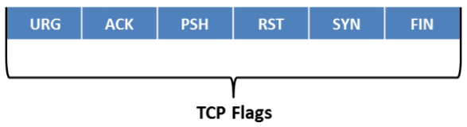
Establishes a reliable TCP connection before data transmission by synchronizing sequence numbers between the client and server.
تُنشئ اتصال TCP موثوقاً قبل نقل البيانات عن طريق مزامنة أرقام التسلسل بين العميل والخادم.
| Step | Flags | Description · الوصف |
|---|---|---|
| 1. SYN | SYN | Client requests a connection and sends an initial sequence number (Seq = x). يطلب العميل الاتصال ويرسل رقم تسلسل أولي (Seq = x). |
| 2. SYN-ACK | SYN, ACK | Server accepts the request, acknowledges the client's sequence number (Ack = x + 1), and sends its own sequence number (Seq = y). يقبل الخادم الطلب ويُقرّ برقم تسلسل العميل (Ack = x + 1) ويرسل رقم تسلسله الخاص (Seq = y). |
| 3. ACK | ACK | Client acknowledges the server's sequence number (Ack = y + 1), completing the connection setup. يُقرّ العميل برقم تسلسل الخادم (Ack = y + 1) فيكتمل إنشاء الاتصال. |
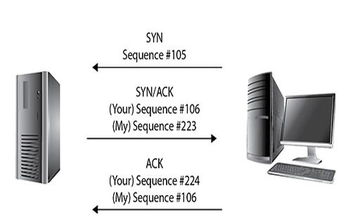
A port number is a logical identifier used by TCP and UDP to determine which application should receive incoming data.
How It Works — Every TCP/UDP packet contains:
- Source Port (sender's application)
- Destination Port (receiver's application)
The operating system uses the destination port to deliver the packet to the correct application.
رقم المنفذ هو معرّف منطقي يستخدمه TCP و UDP لتحديد التطبيق الذي يجب أن يستقبل البيانات الواردة.
كيف يعمل — كل حزمة TCP/UDP تحتوي على:
- منفذ المصدر (تطبيق المرسِل)
- منفذ الوجهة (تطبيق المستقبِل)
يستخدم نظام التشغيل منفذ الوجهة لتسليم الحزمة إلى التطبيق الصحيح.
Examples
- Web browser → HTTP (Port 80)
- Email client → SMTP (Port 25)
- Secure web → HTTPS (Port 443)
Think of a port as a room number in a building. The IP address identifies the building, while the port identifies the correct room (application).
أمثلة
- متصفح الويب ← HTTP (المنفذ ٨٠)
- عميل البريد ← SMTP (المنفذ ٢٥)
- الويب الآمن ← HTTPS (المنفذ ٤٤٣)
تخيّل المنفذ كـرقم غرفة في مبنى: فـعنوان IP يحدد المبنى، بينما المنفذ يحدد الغرفة الصحيحة (التطبيق).
| Port | Protocol | Service | الخدمة |
|---|---|---|---|
| 20/21 | FTP | File Transfer Protocol | بروتوكول نقل الملفات |
| 22 | SSH | Secure Remote Login | دخول آمن عن بُعد |
| 23 | Telnet | Remote Login (Unencrypted) | دخول عن بُعد (غير مشفّر) |
| 25 | SMTP | Email Sending | إرسال البريد الإلكتروني |
| 53 | DNS | Domain Name Service | خدمة أسماء النطاقات |
| 67/68 | DHCP | Automatic IP Assignment | تعيين عناوين IP تلقائياً |
| 69 | TFTP | Trivial File Transfer | نقل ملفات مبسّط |
| 80 | HTTP | Web Browsing | تصفح الويب |
| 110 | POP3 | Email Retrieval | استرجاع البريد الإلكتروني |
| 143 | IMAP | Email Retrieval | استرجاع البريد الإلكتروني |
| 161 | SNMP | Network Management | إدارة الشبكة |
| 389 | LDAP | Directory Services | خدمات الدليل |
| 443 | HTTPS | Secure Web Browsing | تصفح ويب آمن |
| 445 | SMB | Windows File Sharing | مشاركة ملفات ويندوز |
| 3389 | RDP | Remote Desktop | سطح المكتب البعيد |
| State | Meaning | المعنى |
|---|---|---|
| LISTENING | Waiting for an incoming connection. | في انتظار اتصال وارد. |
| ESTABLISHED | Active connection between two hosts. | اتصال نشط بين جهازين. |
| CLOSE_WAIT | Remote host has closed the connection. | الجهاز البعيد أغلق الاتصال. |
| TIME_WAIT | Local host has closed the connection but waits for delayed packets before fully closing. | الجهاز المحلي أغلق الاتصال لكنه ينتظر الحزم المتأخرة قبل الإغلاق التام. |
Viewing Port States in Windows:
لعرض حالات المنافذ في ويندوز:
Scanning is the process of actively collecting information about a target system or network after reconnaissance. It helps identify live hosts, open ports, running services, operating systems, and potential vulnerabilities.
Scanning methodology phases include the following steps:
- Check for live systems. Something as simple as a ping can provide this. This gives you a list of what’s actually alive on your network subnet.
- Check for open ports. Once you know which IP addresses are active, find what ports they’re listening on.
- Scan beyond IDS. Sometimes your scanning efforts need to be altered to avoid those pesky intrusion detection systems.
- Perform banner grabbing. Banner grabbing and OS fingerprinting will tell you what operating system is on the machines and which services they are running.
- Scan for vulnerabilities. Perform a more focused look at the vulnerabilities these machines haven’t been patched for yet.
- Draw network diagrams. A good network diagram will display all the logical and physical pathways to targets you might like.
- Prepare proxies. This obscures your efforts to keep you hidden.
الفحص هو عملية جمع المعلومات بشكل نشط عن نظام أو شبكة الهدف بعد الاستطلاع. ويساعد على تحديد الأجهزة النشطة، والمنافذ المفتوحة، والخدمات العاملة، وأنظمة التشغيل، والثغرات المحتملة.
تشمل مراحل منهجية الفحص الخطوات التالية:
- التحقق من الأنظمة النشطة. شيء بسيط مثل ping يمكن أن يوفر ذلك، ويعطيك قائمة بما هو حيّ فعلاً على شبكتك الفرعية.
- التحقق من المنافذ المفتوحة. بعد معرفة عناوين IP النشطة، اكتشف على أي منافذ تستمع.
- الفحص متجاوزاً أنظمة كشف التسلل (IDS). أحياناً يجب تعديل أسلوب الفحص لتجنّب أنظمة كشف التسلل المزعجة.
- تنفيذ التقاط اللافتات (Banner grabbing). التقاط اللافتات وبصمة نظام التشغيل يخبرانك بنظام التشغيل على الأجهزة والخدمات التي تعمل عليها.
- فحص الثغرات. إلقاء نظرة أكثر تركيزاً على الثغرات التي لم تُرقَّع بعد في هذه الأجهزة.
- رسم مخططات الشبكة. المخطط الجيد يعرض جميع المسارات المنطقية والمادية إلى الأهداف.
- تجهيز الوسطاء (Proxies). هذا يُخفي جهودك ويبقيك مستتراً.
What is Host Discovery?
Host discovery is the process of identifying which devices on a network are online (alive) before performing further scanning.
Why is it Important?
- Identifies active hosts
- Eliminates inactive IP addresses
- Reduces scanning time
- Focuses later scans on reachable systems
Common Methods
- ICMP Ping
- ARP Scan (Local networks)
- TCP Ping
- UDP Ping
ما هو اكتشاف الأجهزة؟
اكتشاف الأجهزة هو عملية تحديد الأجهزة المتصلة (النشطة) على الشبكة قبل إجراء فحص إضافي.
لماذا هو مهم؟
- يحدد الأجهزة النشطة
- يستبعد عناوين IP غير النشطة
- يقلل وقت الفحص
- يركّز الفحوصات اللاحقة على الأنظمة التي يمكن الوصول إليها
الطرق الشائعة
- ICMP Ping
- فحص ARP (للشبكات المحلية)
- TCP Ping
- UDP Ping
What is ICMP?
Internet Control Message Protocol (ICMP) is a Network Layer protocol used for:
- Error reporting
- Network diagnostics
- Connectivity testing
ما هو ICMP؟
بروتوكول رسائل التحكم في الإنترنت (ICMP) هو بروتوكول في طبقة الشبكة يُستخدم لـ:
- الإبلاغ عن الأخطاء
- تشخيص الشبكة
- اختبار الاتصال
| Type | Name | Purpose · الغرض |
|---|---|---|
| 0 | Echo Reply | Host responds to a ping. الجهاز يستجيب لأمر ping. |
| 3 | Destination Unreachable | Host or network cannot be reached. تعذّر الوصول إلى الجهاز أو الشبكة. |
| 8 | Echo Request | Ping request sent by the scanner. طلب ping يرسله الفاحص. |
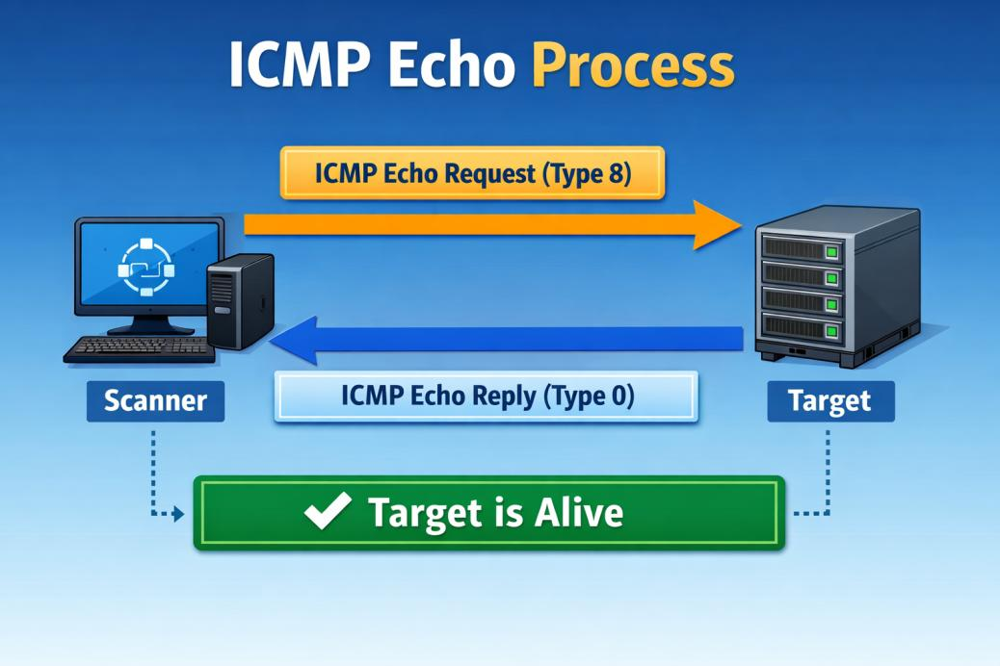
A Ping Sweep sends ICMP Echo Requests to multiple IP addresses within a network to discover active hosts.
مسح Ping (Ping Sweep) يرسل طلبات ICMP Echo إلى عناوين IP متعددة داخل الشبكة لاكتشاف الأجهزة النشطة.
Advantagesالمزايا
- Fast
- Simple
- Efficient for discovering live hosts
- سريع
- بسيط
- فعّال في اكتشاف الأجهزة النشطة
Limitationsالقيود
- Firewalls may block ICMP.
- Many systems disable ping responses.
- IDS/IPS may detect ping sweeps.
- Less effective in some IPv6 environments.
- قد تحجب الجدران النارية بروتوكول ICMP.
- كثير من الأنظمة تعطّل الرد على ping.
- قد تكتشف أنظمة IDS/IPS عمليات مسح Ping.
- أقل فعالية في بعض بيئات IPv6.
| Tool | Purpose | الغرض |
|---|---|---|
| Nmap / Zenmap | Host discovery and network scanning | اكتشاف الأجهزة وفحص الشبكة |
| Angry IP Scanner | Fast IP scanning | فحص سريع لعناوين IP |
| Advanced IP Scanner | Windows network scanner | فاحص شبكات لويندوز |
| SolarWinds Engineer Toolset | Network administration and discovery | إدارة الشبكات واكتشافها |
| OPUtils | IP address and switch management | إدارة عناوين IP والمحوّلات |
| SuperScan | Port and host scanner | فاحص منافذ وأجهزة |
| Pinkie | Lightweight network utility | أداة شبكة خفيفة |
Port scanning is the process of sending packets to a target system to determine which TCP/UDP ports are open, closed, or filtered.
Objectives
- Discover running services
- Identify open ports
- Detect operating systems and applications
- Find potential attack entry points
How It Works
A port scanner manipulates TCP flags and analyzes the target's responses to determine the state of each port.
فحص المنافذ هو عملية إرسال حزم إلى النظام المستهدف لتحديد أي منافذ TCP/UDP مفتوحة أو مغلقة أو مُرشَّحة (filtered).
الأهداف
- اكتشاف الخدمات العاملة
- تحديد المنافذ المفتوحة
- كشف أنظمة التشغيل والتطبيقات
- إيجاد نقاط دخول محتملة للهجوم
كيف يعمل
يقوم فاحص المنافذ بالتلاعب بأعلام TCP وتحليل ردود الهدف لتحديد حالة كل منفذ.
| Scan Type | Also Called | Main Feature · الميزة الأساسية |
|---|---|---|
| TCP Connect Scan | Full Open Scan | Completes the TCP three-way handshake. يُكمل المصافحة الثلاثية كاملة. |
| SYN Scan | Half-Open / Stealth Scan | Stops before completing the handshake. يتوقف قبل إكمال المصافحة. |
| FIN / NULL / XMAS Scan | Inverse TCP Flag Scan | Uses unusual TCP flags to probe ports. يستخدم أعلام TCP غير معتادة لاستكشاف المنافذ. |
| Idle Scan | Zombie Scan | Uses a third-party (idle) host to hide the attacker's IP. يستخدم جهازاً خاملاً كطرف ثالث لإخفاء عنوان IP للمهاجم. |
TCP Connect Scan — slide 28فحص الاتصال الكامل
- Completes the full TCP handshake
- Reliable and accurate
- Easily detected by firewalls and IDS
- يُكمل المصافحة الثلاثية بالكامل
- موثوق ودقيق
- سهل الاكتشاف من قِبل الجدران النارية وأنظمة IDS
SYN Scan — slide 28فحص SYN (نصف مفتوح)
- Does not complete the handshake
- Faster than TCP Connect Scan
- More difficult to detect
- One of the most commonly used Nmap scan types
- لا يُكمل المصافحة
- أسرع من فحص الاتصال الكامل
- أصعب في الاكتشاف
- من أكثر أنواع فحص Nmap استخداماً
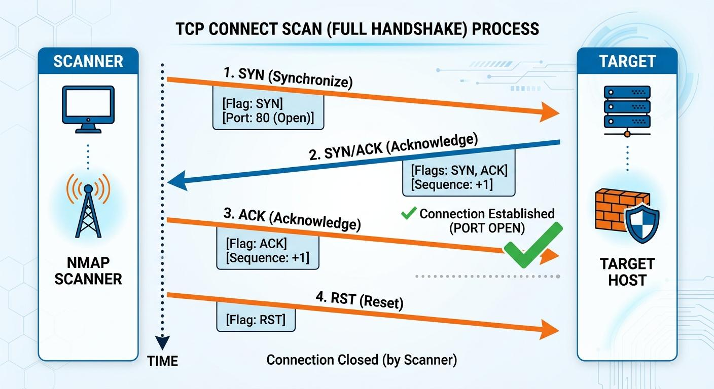
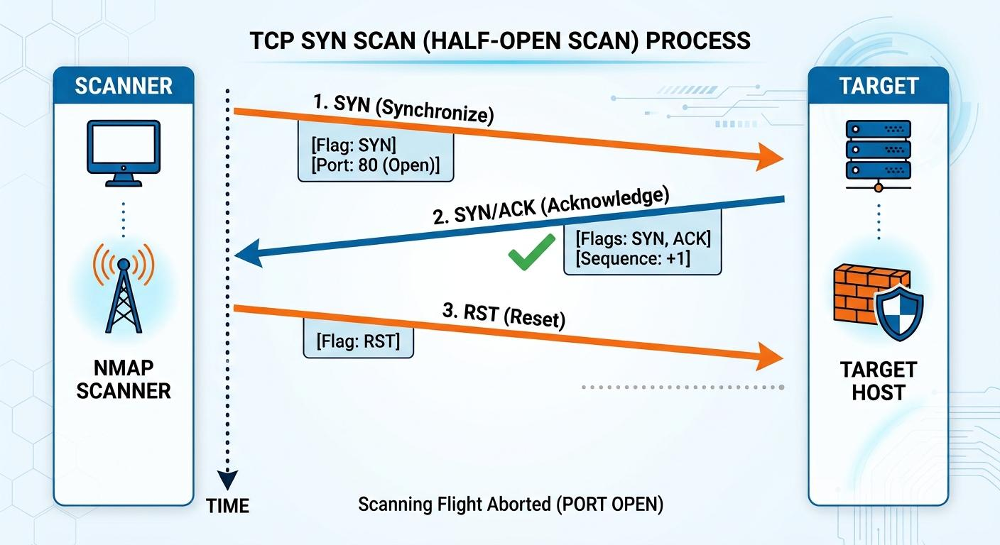
These scans send unusual TCP flag combinations instead of a SYN packet.
ترسل هذه الفحوص تركيبات غير معتادة من أعلام TCP بدلاً من حزمة SYN.
Scanning type → Flags sentنوع الفحص ← الأعلام المرسلة
| Scan Type | Flags Sent |
|---|---|
| FIN Scan | FIN |
| NULL Scan | No Flags |
| XMAS Scan | FIN + PSH + URG |
| نوع الفحص | الأعلام المرسلة |
|---|---|
| فحص FIN | FIN |
| فحص NULL | بدون أعلام |
| فحص XMAS | FIN + PSH + URG |
Expected Responsesالردود المتوقعة
| Port State | Response |
|---|---|
| Open | No Response |
| Closed | RST |
| حالة المنفذ | الرد |
|---|---|
| مفتوح | لا يوجد رد |
| مغلق | RST |
Instead of scanning the target directly, the attacker uses an idle (zombie) host to perform the scan.
How It Works
- Identify an idle (zombie) host.
- Send spoofed packets using the zombie's IP.
- Observe changes in the zombie's IP Identification (IPID) value.
- Determine whether the target port is open or closed.
Advantages (slide 31)
- Hides the attacker's real IP address
- Very stealthy
- Difficult to trace
بدلاً من فحص الهدف مباشرةً، يستخدم المهاجم جهازاً خاملاً (زومبي) لتنفيذ الفحص.
كيف يعمل
- تحديد جهاز خامل (زومبي).
- إرسال حزم منتحَلة باستخدام عنوان IP للزومبي.
- مراقبة التغيرات في قيمة معرّف IP (IPID) لدى الزومبي.
- تحديد ما إذا كان منفذ الهدف مفتوحاً أم مغلقاً.
المزايا (الشريحة ٣١)
- يُخفي عنوان IP الحقيقي للمهاجم
- خفيّ جداً
- يصعب تتبّعه
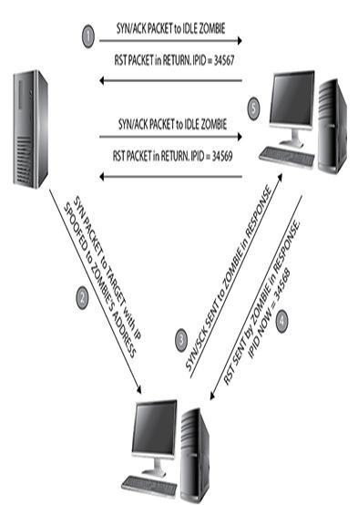
- Network Mapper “Nmap” (https://nmap.org) is a security scanner for network exploration and hacking.
- It allows you to discover hosts, ports, and services on a computer network, thus creating a "map" of the network.
- It includes many mechanisms for port scanning (TCP and UDP), OS detection, version detection, ping sweeps, and so on.
- It sends specially crafted packets to the target host and then analyzes the responses to accomplish its goal.
- It scans networks of literally hundreds of thousands of machines.
- «Nmap» (مخطِّط الشبكة) (https://nmap.org) هو فاحص أمني لاستكشاف الشبكات والاختراق.
- يتيح لك اكتشاف الأجهزة والمنافذ والخدمات على شبكة الحاسوب، وبالتالي إنشاء «خريطة» للشبكة.
- يتضمن آليات كثيرة لـفحص المنافذ (TCP و UDP)، وكشف نظام التشغيل، وكشف الإصدارات، ومسح ping، وغيرها.
- يرسل حزماً مُصمَّمة خصيصاً إلى الجهاز المستهدف ثم يحلل الردود لتحقيق هدفه.
- يفحص شبكات تضم حرفياً مئات الآلاف من الأجهزة.
- Either a network administrator or an attacker can use this tool for their specific needs.
- Network administrators can use Nmap for network inventory, managing service upgrade schedules, and monitoring host or service uptime.
- Attackers use Nmap to extract information such as live hosts on the network, open ports, services (application name and version), type of packet filters/firewalls, MAC details, and OSs along with their versions.
- يمكن لـمسؤول الشبكة أو المهاجم استخدام هذه الأداة لاحتياجاته الخاصة.
- مسؤولو الشبكات يستخدمون Nmap في جرد الشبكة، وإدارة جداول ترقية الخدمات، ومراقبة زمن تشغيل الأجهزة أو الخدمات.
- المهاجمون يستخدمون Nmap لاستخراج معلومات مثل الأجهزة النشطة على الشبكة، والمنافذ المفتوحة، والخدمات (اسم التطبيق وإصداره)، ونوع مرشّحات الحزم/الجدران النارية، وتفاصيل MAC، وأنظمة التشغيل وإصداراتها.
Syntax:
الصيغة:
| Switch | Description | Switch | Purpose |
|---|---|---|---|
-sS | TCP SYN Scan (Stealth Scan) فحص SYN (خفي) | -sV | Service & Version Detection كشف الخدمة والإصدار |
-sT | TCP Connect Scan فحص الاتصال الكامل | -O | Operating System Detection كشف نظام التشغيل |
-sA | ACK Scan فحص ACK | -A | Aggressive Scan (OS, Version, Scripts, Traceroute) فحص شامل عدواني |
-sF | FIN Scan فحص FIN | -Pn | Skip Host Discovery تخطّي اكتشاف الأجهزة |
-sI | Idle Scan الفحص الخامل | -oN | Save Normal Output حفظ المخرجات العادية |
-sX | XMAS Scan فحص XMAS | -T4 | Fast Scan فحص سريع |
-sW | Window Scan فحص النافذة | -f | Fragment Packets (Evasion) تجزئة الحزم (تهرّب) |
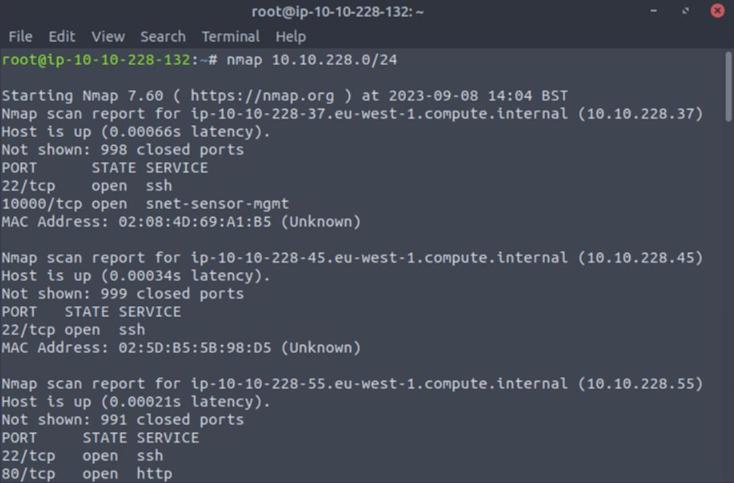
nmap 10.10.228.0/24 output: host is up, open ports (22/tcp ssh, 80/tcp http…), MAC addressesالشريحة ٣٥ — مخرجات nmap 10.10.228.0/24: الأجهزة النشطة، المنافذ المفتوحة، عناوين MAC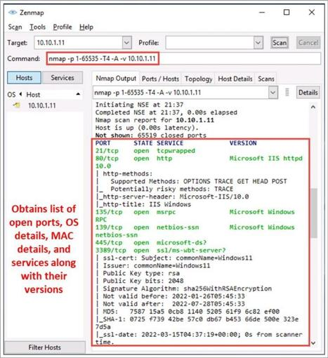
nmap -p 1-65535 -T4 -A -v 10.10.1.11: “Obtains list of open ports, OS details, MAC details, and services along with their versions”الشريحة ٣٧ — واجهة Zenmap: تحصل على قائمة المنافذ المفتوحة وتفاصيل نظام التشغيل و MAC والخدمات وإصداراتها- Hping3 (http://www.hping.org) is a command-line-oriented network scanning and packet crafting tool for the TCP/IP protocol that sends ICMP echo requests and supports TCP, UDP, ICMP, and raw-IP protocols.
- It performs network security auditing, firewall testing, remote OS fingerprinting, and other functions.
- It can send custom TCP/IP packets and display target replies similarly to a ping program with ICMP replies.
- Syntax:
hping3
- Hping3 (http://www.hping.org) أداة سطر أوامر لفحص الشبكة وصياغة الحزم لبروتوكول TCP/IP، ترسل طلبات ICMP echo وتدعم بروتوكولات TCP و UDP و ICMP و raw-IP.
- تنفّذ تدقيق أمن الشبكات، واختبار الجدران النارية، وبصمة نظام التشغيل عن بُعد، ووظائف أخرى.
- يمكنها إرسال حزم TCP/IP مخصصة وعرض ردود الهدف بشكل مشابه لبرنامج ping مع ردود ICMP.
- الصيغة:
hping3
- NetScanTools Pro (https://www.netscantools.com) is an investigation tool that allows you to troubleshoot, monitor, discover, and detect devices on your network.
- Using this tool, you can easily gather information about the local LAN as well as Internet users, IP addresses, ports, and so on.
- Attackers can find vulnerabilities and exposed ports in the target system.
- NetScanTools Pro (https://www.netscantools.com) هي أداة تحقيق تتيح لك استكشاف الأعطال ومراقبة واكتشاف وكشف الأجهزة على شبكتك.
- باستخدامها يمكنك بسهولة جمع معلومات عن الشبكة المحلية وكذلك مستخدمي الإنترنت وعناوين IP والمنافذ وغيرها.
- يمكن للمهاجمين إيجاد الثغرات والمنافذ المكشوفة في النظام المستهدف.
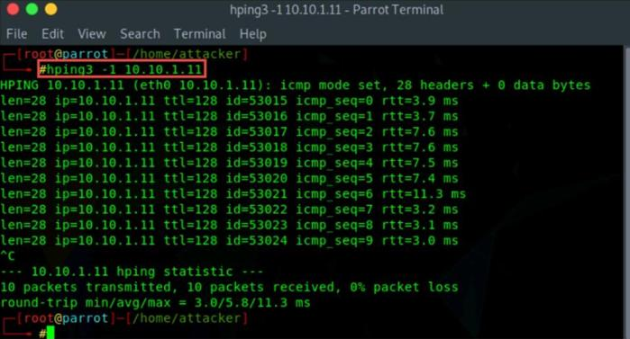
hping3 -1 10.10.1.11 — ICMP mode, showing round-trip min/avg/maxالشريحة ٣٩ — تنفيذ hping3 -1 10.10.1.11 في وضع ICMP مع أزمنة الذهاب والإياب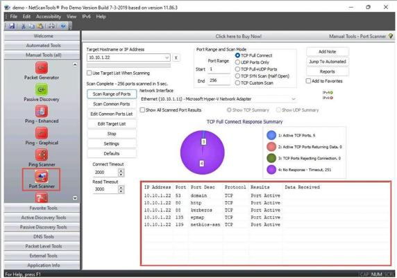
Scan evasion refers to techniques used to reduce the chance of detection during scanning.
- Attackers attempt to hide their identity and scanning activities.
- Evasion techniques help bypass:
- Firewalls
- Intrusion Detection Systems (IDS)
- Network monitoring tools
يشير التهرب من الفحص إلى تقنيات تُستخدم لتقليل احتمال الاكتشاف أثناء الفحص.
- يحاول المهاجمون إخفاء هويتهم وأنشطة الفحص التي يقومون بها.
- تساعد تقنيات التهرب على تجاوز:
- الجدران النارية
- أنظمة كشف التسلل (IDS)
- أدوات مراقبة الشبكة
Major Evasion Techniques:
تقنيات التهرب الرئيسية:
PACKET FRAGMENTATION
- A large packet is divided into multiple smaller fragments.
- Each fragment contains only part of the original packet.
- Some IDSs may have difficulty analyzing fragmented traffic.
- The destination host reassembles the fragments.
Example
-f tells Nmap to send fragmented packets.
تجزئة الحزم
- تُقسَّم الحزمة الكبيرة إلى عدة أجزاء أصغر.
- كل جزء يحتوي فقط على جزء من الحزمة الأصلية.
- قد تجد بعض أنظمة IDS صعوبة في تحليل حركة المرور المجزّأة.
- الجهاز الوجهة يعيد تجميع الأجزاء.
مثال
الخيار -f يخبر Nmap بـإرسال حزم مجزّأة.
IP ADDRESS SPOOFING
- Forges the source IP address.
- Hides the attacker's identity.
- Common tools include: Hping, Scapy, Nmap, Ettercap, Cain.
انتحال عنوان IP
- يزوّر عنوان IP المصدر.
- يُخفي هوية المهاجم.
- من الأدوات الشائعة: Hping و Scapy و Nmap و Ettercap و Cain.
A proxy acts as an intermediary between the scanner and the target. The proxy forwards requests to the destination. Network monitoring systems detect the proxy's IP rather than the attacker's.
يعمل البروكسي كـوسيط بين الفاحص والهدف. فهو يمرّر الطلبات إلى الوجهة. وأنظمة مراقبة الشبكة تكتشف عنوان IP للبروكسي بدلاً من عنوان المهاجم.
| IP Spoofing · انتحال IP | Proxy · البروكسي |
|---|---|
| Uses a fake source IP address يستخدم عنوان IP مصدر مزيّف |
Uses a real intermediary server يستخدم خادماً وسيطاً حقيقياً |
| May not receive replies قد لا يستقبل الردود |
Replies are returned through the proxy تعود الردود عبر البروكسي |
| Hides identity يُخفي الهوية |
Hides both identity and location يُخفي الهوية والموقع معاً |
PROXY CHAINS
A proxy chain routes traffic through multiple proxy servers before reaching the target. Each proxy only knows the previous and next hop, making it more difficult to trace the source. Multiple proxies provide greater anonymity than a single proxy.
سلاسل البروكسي
سلسلة البروكسي توجّه حركة المرور عبر عدة خوادم وسيطة قبل الوصول إلى الهدف. وكل بروكسي يعرف فقط القفزة السابقة والتالية، مما يجعل تتبّع المصدر أصعب. والبروكسيات المتعددة توفر إخفاء هوية أكبر من بروكسي واحد.
Benefitsالفوائد
- Hides the attacker's real IP address.
- Makes traffic tracing more difficult.
- Adds an extra layer of privacy during network communication.
- يُخفي عنوان IP الحقيقي للمهاجم.
- يجعل تتبّع حركة المرور أصعب.
- يضيف طبقة إضافية من الخصوصية أثناء الاتصال الشبكي.
Limitationsالقيود
- Increased communication delay (latency).
- Depends on the reliability of each proxy server.
- Some proxies may log user activity.
- زيادة تأخير الاتصال (Latency).
- يعتمد على موثوقية كل خادم وسيط.
- بعض البروكسيات قد تسجّل نشاط المستخدم.
- Vulnerability scanning is the process of identifying known security weaknesses in a target system.
- It compares the target's configuration and software against a database of known vulnerabilities.
- Helps organizations discover s… [text truncated on the original slide]
Typical Vulnerabilities Detected
- Missing security patches
- Outdated software versions
- Weak configurations
- Default or insecure settings
- Known Common Vulnerabilities and Exposures (CVEs)
- فحص الثغرات هو عملية تحديد نقاط الضعف الأمنية المعروفة في النظام المستهدف.
- يقوم بـمقارنة إعدادات النظام المستهدف وبرمجياته بقاعدة بيانات للثغرات المعروفة.
- يساعد المؤسسات على اكتشاف… [النص مقطوع في الشريحة الأصلية]
الثغرات النموذجية التي تُكتشف
- ترقيعات أمنية مفقودة
- إصدارات برمجية قديمة
- إعدادات ضعيفة
- إعدادات افتراضية أو غير آمنة
- الثغرات والانكشافات الشائعة المعروفة (CVEs)
HOW VULNERABILITY SCANNING WORKS
The process of vulnerability scanning has five steps.
A Typical Report Includes
- Detected vulnerabilities
- Severity level (Critical, High, Medium, Low)
- Affected systems
- Recommended remediation actions
كيف يعمل فحص الثغرات
تتكون عملية فحص الثغرات من خمس خطوات.
التقرير النموذجي يتضمن
- الثغرات المكتشفة
- مستوى الخطورة (حرج، عالٍ، متوسط، منخفض)
- الأنظمة المتأثرة
- إجراءات المعالجة الموصى بها
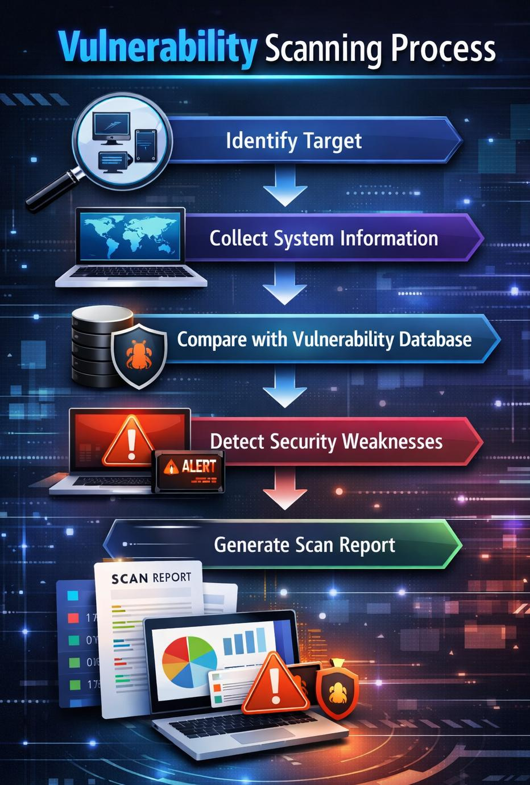
| Tool | Description | الوصف |
|---|---|---|
| Nessus | One of the most widely used commercial vulnerability scanners. | من أكثر فاحصات الثغرات التجارية استخداماً. |
| OpenVAS (Greenbone) | Free and open-source vulnerability scanner with extensive scanning capabilities. | فاحص ثغرات مجاني ومفتوح المصدر بقدرات فحص واسعة. |
| Qualys VMDR | Cloud-based vulnerability management and compliance platform. | منصة سحابية لإدارة الثغرات والامتثال. |
| Microsoft Baseline Security Analyzer (MBSA) | Legacy Microsoft tool for identifying missing Windows updates and security misconfigurations. | أداة مايكروسوفت القديمة لتحديد تحديثات ويندوز المفقودة وأخطاء الإعدادات الأمنية. |
| GFI LanGuard | Performs vulnerability assessment, patch management, and network auditing. | تنفّذ تقييم الثغرات وإدارة الترقيعات وتدقيق الشبكة. |
- Enumeration is the process of actively collecting detailed information from a target system.
- It involves establishing connections with services and requesting specific information.
- The objective is to identify resources that may be useful during a security assessment.
Information That Can Be Enumerated
- التعداد هو عملية جمع معلومات تفصيلية بشكل نشط من النظام المستهدف.
- يتضمن إنشاء اتصالات مع الخدمات وطلب معلومات محددة.
- الهدف هو تحديد الموارد التي قد تكون مفيدة أثناء التقييم الأمني.
المعلومات التي يمكن تعدادها
| Scanning · الفحص | Enumeration · التعداد |
|---|---|
| Identifies live hosts and open ports يحدد الأجهزة النشطة والمنافذ المفتوحة |
Retrieves detailed information from discovered services يسترجع معلومات تفصيلية من الخدمات المكتشفة |
| Answers "What is available?" يجيب على سؤال «ما المتاح؟» |
Answers "What information can be obtained?" يجيب على سؤال «ما المعلومات التي يمكن الحصول عليها؟» |
| Less interactive أقل تفاعلية |
More interactive أكثر تفاعلية |
| Usually the first step عادةً الخطوة الأولى |
Performed after scanning يُنفَّذ بعد الفحص |
Enumeration techniques:
تقنيات التعداد:
Banner-grabbing is an active enumeration technique. It sends a request to a service running on an open port. The service may respond with a banner containing useful information.
A Banner May Reveal
- Service name
- Software version
- Operating system information
- Web server type
- Mail server information
التقاط اللافتات (Banner grabbing) هو تقنية تعداد نشطة. حيث يُرسَل طلب إلى خدمة تعمل على منفذ مفتوح، وقد ترد الخدمة بـلافتة تحتوي على معلومات مفيدة.
قد تكشف اللافتة عن
- اسم الخدمة
- إصدار البرنامج
- معلومات نظام التشغيل
- نوع خادم الويب
- معلومات خادم البريد
Example — Suppose a web server returns:
From this banner we learn:
Web server: Microsoft IIS
Version: 10.0
مثال — لنفترض أن خادم ويب أعاد:
من هذه اللافتة نعرف:
خادم الويب: Microsoft IIS
الإصدار: 10.0
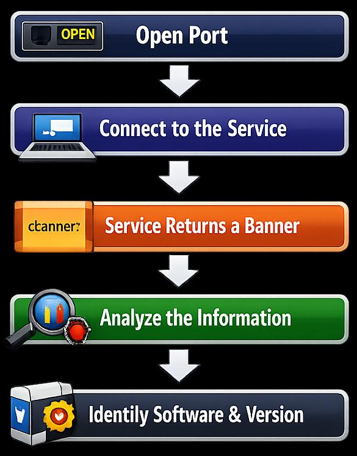
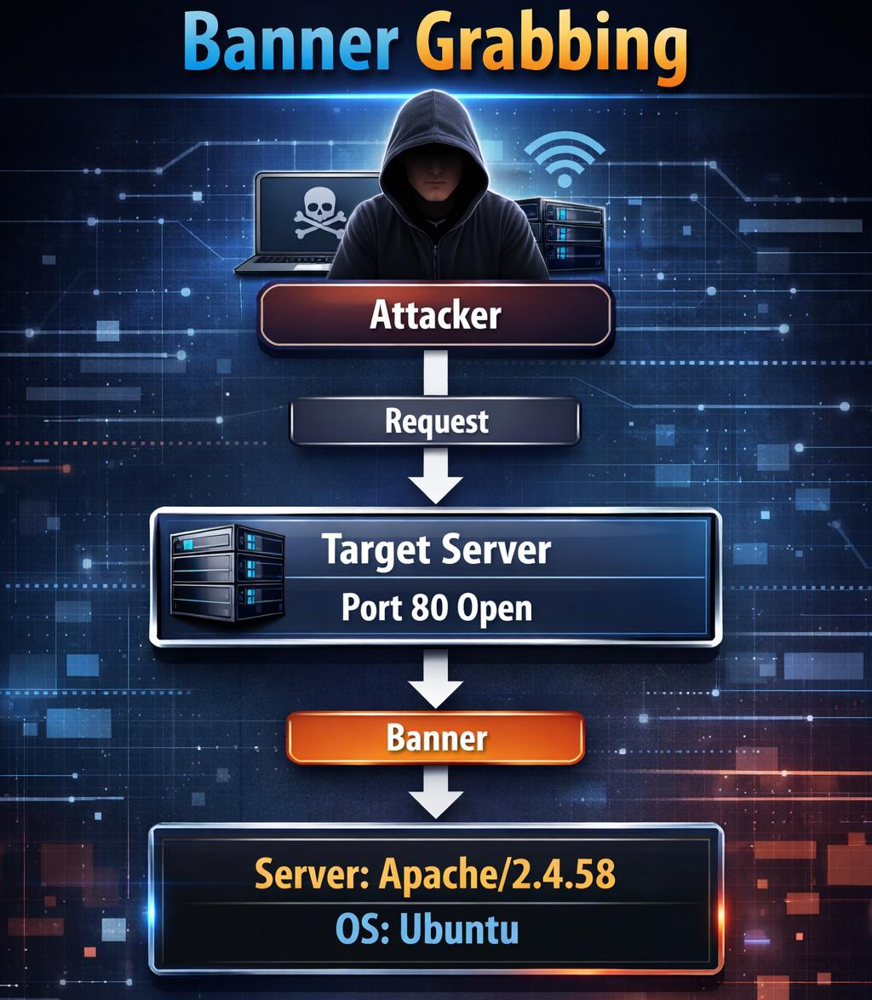
| Tool | Purpose | الغرض |
|---|---|---|
| Telnet | Connects to a TCP port and displays service responses. | يتصل بمنفذ TCP ويعرض ردود الخدمة. |
| Netcat (nc) | Reads and writes network data; commonly used for banner grabbing. | يقرأ ويكتب بيانات الشبكة؛ يُستخدم كثيراً لالتقاط اللافتات. |
| Nmap | Performs service detection and version identification. | ينفّذ كشف الخدمات وتحديد الإصدارات. |
NetBIOS (Network Basic Input/Output System) is a Windows networking technology used for communication and resource sharing within local networks.
It can reveal valuable information about a target, including:
- Computer name
- Workgroup or domain name
- Shared resources
- File and printer sharing status
- Network browser information
NetBIOS (نظام الإدخال/الإخراج الأساسي للشبكة) هو تقنية شبكات في ويندوز تُستخدم للاتصال ومشاركة الموارد داخل الشبكات المحلية.
ويمكنه كشف معلومات قيّمة عن الهدف، منها:
- اسم الحاسوب
- اسم مجموعة العمل أو النطاق
- الموارد المشتركة
- حالة مشاركة الملفات والطابعات
- معلومات متصفح الشبكة
- NetBIOS is considered first for enumeration because it extracts information about the target network, such as NetBIOS name, username, workgroup/domain name, and MAC address.
- Attackers usually target the NetBIOS service because it is easy to exploit and runs on Windows systems even when not in use.
- NetBIOS uses:
- TCP/UDP port 137
- UDP port 138
- TCP port 139
- يُعتبر NetBIOS الأول في التعداد لأنه يستخرج معلومات عن الشبكة المستهدفة مثل اسم NetBIOS، واسم المستخدم، واسم مجموعة العمل/النطاق، وعنوان MAC.
- عادةً ما يستهدف المهاجمون خدمة NetBIOS لأنها سهلة الاستغلال وتعمل على أنظمة ويندوز حتى عند عدم استخدامها.
- يستخدم NetBIOS:
- المنفذ 137 على TCP/UDP
- المنفذ 138 على UDP
- المنفذ 139 على TCP
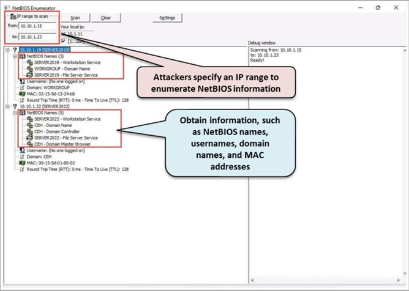
- Simple Network Management Protocol (SNMP) is a networking protocol that allows network administrators to manage network devices from a remote location.
- SNMP consists of a manager and an agent.
- The agent is installed by vendors in most network components, such as routers, switches, servers, firewalls, and wireless access points.
- The manager is installed by the network administrator on a separate computer.
- بروتوكول إدارة الشبكة البسيط (SNMP) هو بروتوكول شبكي يسمح لمسؤولي الشبكة بإدارة أجهزة الشبكة من موقع بعيد.
- يتكوّن SNMP من مدير (manager) ووكيل (agent).
- الوكيل يثبّته المصنّعون في معظم مكونات الشبكة مثل الموجّهات والمحوّلات والخوادم والجدران النارية ونقاط الوصول اللاسلكية.
- المدير يثبّته مسؤول الشبكة على حاسوب منفصل.
- SNMP holds two passwords to access and configure the SNMP agent from the SNMP manager:
- Read community string: It is ‘public’ by default; it allows for the viewing of the device/system configuration.
- Read/write community string: It is ‘private’ by default; it allows remote editing of the configuration.
- When administrators leave the community strings at the default setting, attackers can use these default community strings (passwords) to change or view the configuration of the device or system.
- يحتفظ SNMP بـكلمتَي مرور للوصول إلى وكيل SNMP وتهيئته من مدير SNMP:
- سلسلة المجتمع للقراءة (Read community string): قيمتها الافتراضية ‘public’، وتسمح بـعرض إعدادات الجهاز/النظام.
- سلسلة المجتمع للقراءة والكتابة (Read/write): قيمتها الافتراضية ‘private’، وتسمح بـتعديل الإعدادات عن بُعد.
- عندما يترك المسؤولون سلاسل المجتمع على الإعداد الافتراضي، يمكن للمهاجمين استخدام هذه السلاسل الافتراضية (كلمات المرور) لـتغيير أو عرض إعدادات الجهاز أو النظام.
Snmp-check
Snmp-check (nothink.org) is a tool that allows the enumeration of SNMP devices and places the output in a user-friendly format.
أداة Snmp-check
Snmp-check (nothink.org) أداة تتيح تعداد أجهزة SNMP وتضع المخرجات في صيغة سهلة القراءة للمستخدم.
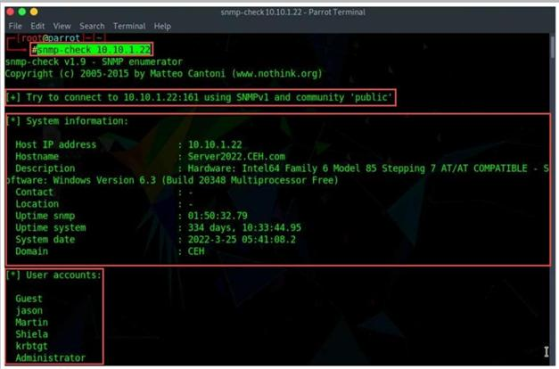
snmp-check 10.10.1.22 using SNMPv1 and community ‘public’: host IP, hostname, description, uptime, system date, domain and user accountsالشريحة ٦٦ — تنفيذ snmp-check 10.10.1.22 بمجتمع ‘public’: عنوان الجهاز واسمه ووصفه وزمن التشغيل والتاريخ والنطاق وحسابات المستخدمينRemember: Discover · Identify · Enumerate · Access · Protect
تذكّر: اكتشف · حدّد · عدّد · اوصل · احمِ